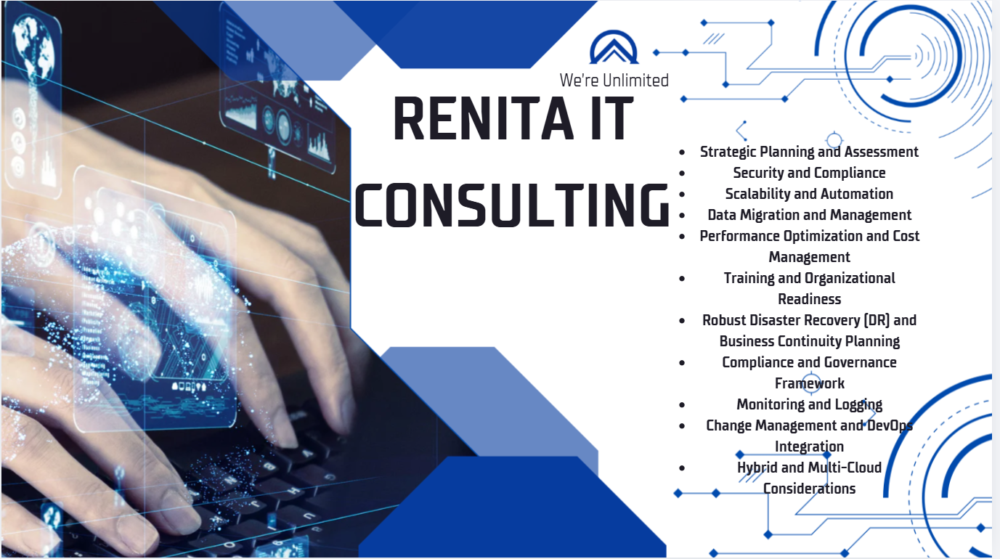
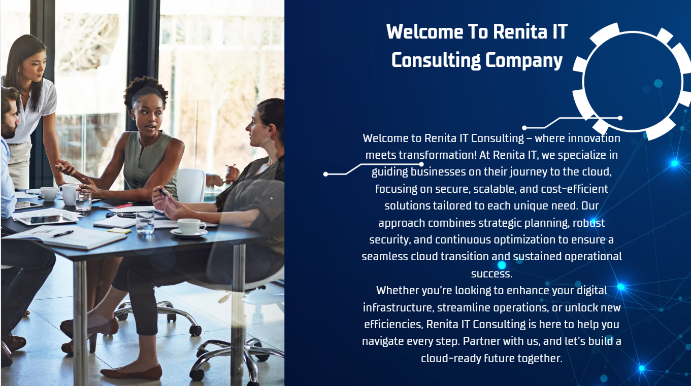

☁
Cloud Strategy & Migration
Cloud roadmap, workload assessment, migration planning, hybrid options, and secure deployment guidance.
Cloud • DevOps • Security • Device Support
Renita IT Consulting helps organizations and individuals deploy secure technology, optimize cloud systems, automate operations, and keep Windows PCs and MacBooks up to date.

Services
Cloud roadmap, workload assessment, migration planning, hybrid options, and secure deployment guidance.
Identity access, governance, risk reduction, policy alignment, and compliance-ready architecture support.
GitHub workflows, CI/CD, infrastructure as code, deployment automation, and operational improvement.
Visibility into systems, application health, logging practices, alerting workflows, and reliability support.
Backup strategy, recovery planning, business continuity, and resilient architecture recommendations.
Affordable websites, landing pages, static hosting, domain setup, SSL, DNS, and launch support.
Windows PC & MacBook Upgrade Services
We help customers upgrade Windows PCs and MacBooks to the latest supported operating system versions, improve performance, prepare backups, and verify compatibility before upgrades.

About Renita
Renita IT Consulting partners with businesses, startups, agencies, and professionals who need dependable technology guidance without unnecessary complexity.
Our focus is simple: understand the need, design a secure solution, deploy it correctly, document it, and support future growth.
Problems We Solve
Cloud migration and modernization gaps
Security and compliance challenges
Poor monitoring and operational visibility
Performance and cost inefficiency
Windows and Mac upgrade readiness issues
Website launch, DNS, SSL, and hosting setup
Why Choose Us
Contact
Email or call Renita IT Consulting for cloud consulting, website deployment, Windows PC upgrades, MacBook upgrades, DevOps support, or IT planning.